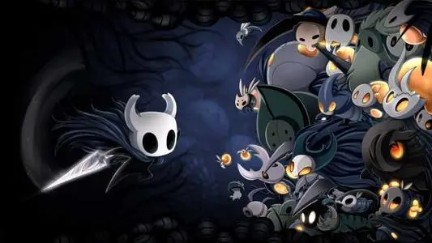

Hollow Knights

《空洞骑士》是一款2D动作冒险游戏，开发者是来自澳大利亚的一个只有三个人的小团队Team Cherry，2017年2月25日发售在PC平台。
该作讲述的是一个名为德特茅斯的衰落小镇下掩埋着一个古老的废弃王国，名叫圣巢。这个王国被瘟疫所侵蚀而废弃，废弃的原因则是因为名为辐光的光之古神，她可以通过思想来传播瘟疫，被瘟疫侵蚀的虫子都会被本能所支配，失去心智。
想了解更多？
点击这里